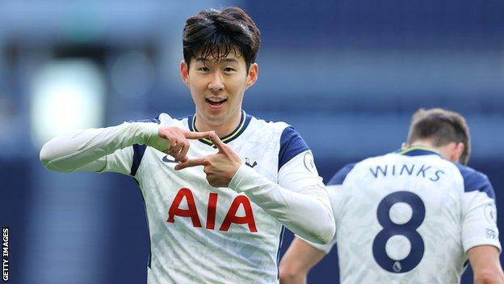

My name is Matthew Cho, a sophomore at Canyon Crest Academy. I am 5'6" and 15 years old. My parents are both Korean and I was born in Atlanta, Georgia. I recently discovered I'm slightly lactose intolerant and switched to lactose-free milk. My favorite subject is math.
 I like sports and athletes. My favorite sport to play is soccer. Players I admire include Son Heung-min, Kaoru Mitoma, and Ji-sung Park. In my free time I listen to music, use my phone, and watch movies. I enjoy traveling and meeting new people.
I like to expand my music taste every month. This summer friends introduced me to K-pop via an idol survival show, Boys 2 Planet. Favorite groups: NewJeans, TWICE, and Aespa. Recently I got into hyperpop — artists I listen to include 2hollis, The Deep, Tonser, kimj, Effie, and Glaive.